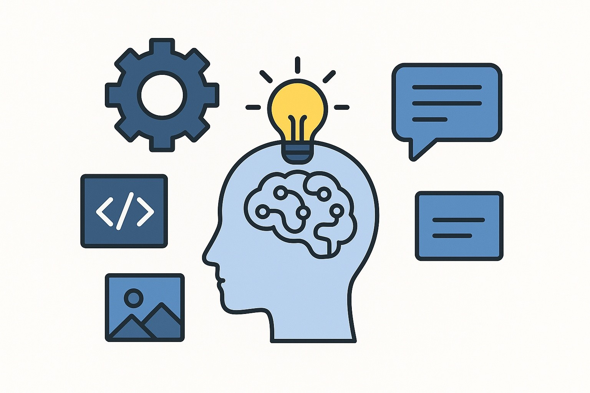
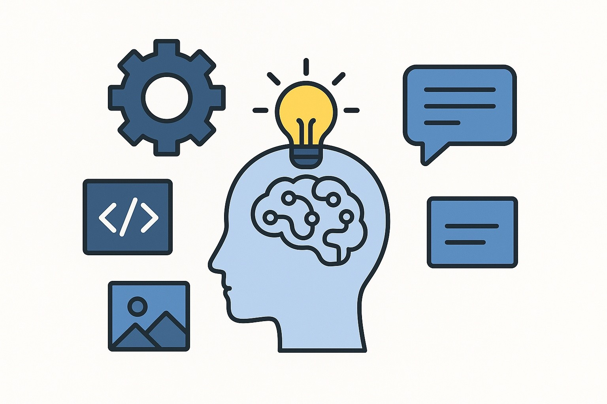

Generative AI has taken the world by storm. The sensation of a chat bot that has instant humanoid response has become a necessary tool for people to function. From creating art, writing code, completing essays and homework, it transformed the world almost overnight. People's mindsets had been changed, the phrase, "Google it" quickly evolved into "Let me ask Chat GPT". It has the power to immensely help society, but also to destroy it. Generative AI also has lots of environmental downsides, we must consider if the damage it causes is worth it.
 

Generative AI (Artificial Intelligence) is a digital tool which creates new content, including code, images, text, videos, and more. From chatbots to art generators, generative AI is already changing the way we think, learn and create. Unlike traditional computer programs that follow a fixed set of instructions, generative AI learns from enormous amounts of data and uses that knowledge to generate something entirely new. This makes it very different from search engines, which can only use information that already exists. Generative AI systems can produce creative and human-like outputs that often seem as though they were made by a person. While it may appear as a great tool that can solve many problems, it also raises serious concerns.